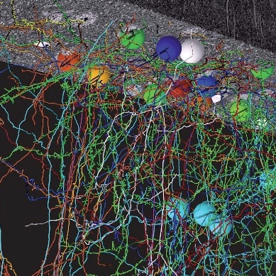

<section class="content">
 

<div id="content">

<h1>Bock et al. Mouse V1 Layer 2/3 (Nature, 2011)</h1>
<table border="1">
<tbody>
<tr>
<td><a href="../img/home-photo.png"></a></td>
<td>Davi Bock, Ph.D. and Wei-Chung Allen Lee, Ph.D., in the laboratory of Clay Reid, M.D., Ph.D. acquired a beautiful volume of mouse primary visual cortical data, spanning layers 1, 2/3, and upper layer 4. &nbsp;In addition to the electron microscope (EM) data, they used two-photon microscopy to determine the functional properties of about 14 of the cells in the same volume.&nbsp;<p></p>
<p style="text-align: center;"><a href="http://openconnectomeproject.org/catmaid/?pid=4&amp;zp=27135&amp;yp=244096&amp;xp=205492&amp;sid0=4&amp;s0=2">View online now!<br>
</a></p>
<p>&nbsp;</p></td>
</tr>
</tbody>
</table>
<h2>Specifications</h2>
<table border="1">
<tbody>
<tr>
<td>Organism</td>
<td>Mouse</td>
</tr>
<tr>
<td>Brain region</td>
<td>Primary visual cortex layers 1, 2/3, and upper 4</td>
</tr>
<tr>
<td>Resolution</td>
<td>4x4x45 cubic nanometers</td>
</tr>
<tr>
<td>Total volume</td>
<td>450x350x50 cubic microns</td>
</tr>
<tr>
<td>Web viewing</td>
<td><a href="http://openconnectomeproject.org/catmaid/?pid=4&amp;zp=27135&amp;yp=244096&amp;xp=205492&amp;sid0=4&amp;s0=2">CATMAID</a></td>
</tr>
<tr>
<td>Sample downloads</td>
<td><a href="http://openconnectomeproject.org/data/bock11/sample/">Yes</a></td>
</tr>
<tr>
<td>Volume cutout service</td>
<td><a href="http://hssl.cs.jhu.edu/wiki/doku.php?id=randal:hssl:research:brain:data_set_description">Yes</a></td>
</tr>
<tr>
<td>Recommended Software</td>
<td><a href="http://www.ini.uzh.ch/~acardona/trakem2.html">TrakEM2</a></td>
</tr>
<tr>
<td>Connection Matrix</td>
<td><a href="http://db.tt/wgc5cbbw">Yes</a></td>
</tr>
<tr>
<td>Functional data</td>
<td>Available <a href="mailto:joshuav@jhu.edu">upon request</a></td>
</tr>
<tr>
<td>Annotations</td>
<td>Not yet</td>
</tr>
<tr>
<td>Disk space</td>
<td>12TB</td>
</tr>
<tr>
<td>Reference</td>
<td><a href="http://www.nature.com/nature/journal/v471/n7337/full/nature09802.html">Nature (2011)</a>,&nbsp;<a href="http://reid.med.harvard.edu/pdf/Bock-Lee-etal-Reid-2011-Nature.pdf">pdf</a>, <a href="http://reid.med.harvard.edu/pdf/Bock-Lee-etal-Reid-2011-NatureSupp.pdf">suppl.</a></td>
</tr>
<tr>
<td>Press</td>
<td><a href="http://news.harvard.edu/gazette/story/2011/03/web-crawling-the-brain/">Article</a>, <a href="http://blogs.nature.com/news/2011/03/nature_video_untangling_the_br.html">video</a></td>
</tr>
<tr>
<td>Links</td>
<td><a href="http://http://reid.med.harvard.edu/">Clay Reid lab</a>, <a href="http://www.hhmi.org/research/fellows/bock.html">Davi Bock’s lab</a></td>
</tr>
</tbody>
</table>

</div>


  </section>

 